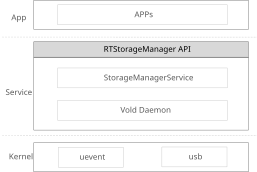

Overview
Storage framework is a whole architecture that detects and manager the external storage devices. It supports external storage device types such as USB or SD card. It is responsible for the external storage hot plug event monitor and automatically mount the file system.
Vold Daemon - Acts as a daemon, monitor and report the storage message from kernel, and run the commands which got from upper layer.
Storage Service - Provides interfaces for applications to get the storage information, such as mount status and path.
Architecture
The block diagram of Storage is shown in the following figure.
{kind=link}

Linux Kernel
Kernel report uevent while storage insert/removed.
Kernel run the command that post by storage daemon.
Vold Daemon
Act as a daemon to monitor the storage hot plug uevent from kernel and also responsible for the file system mount.
Storage Services
Provide high level interfaces for applications to get the storage information.
Interfaces
Storage Interfaces
Storage framework supports interfaces to register and unregister the listener to get the storage message, such as mount message. Applications is responsible to implement a callback function RTStorageStateListener and use RTStorage_RegisterListener to register it to storage framework. Storage framework will callback to application when a device are mounted or unmounted. When a device is mounted, a mount path will also be provided to application via the callback function.
State types |
Path values |
Description |
|---|---|---|
STORAGED_STATE_IDLE |
- |
- |
STORAGED_STATE_MOUNTED |
The storage mount path |
The storage is mounted success |
STORAGED_STATE_UNMOUNTED |
The mount path |
The storage is unmounted success |
Use RTStorageManager
To use storage manager, refer to a test demo at SDK directory: <sdk>/sources/tests/fwk/storage.
RTStorageManager* manager_handle = RTStorageManager_Create()
// callback implemented by application
void MyStorageListener (int state, const char* path) {
if(STORAGED_STATE_MOUNTED==state) {
printf("Client1 storage mount success path:%s", path);
}
else if(STORAGED_STATE_UNMOUNTED==state) {
printf("Client1 storage umount success path:%s", path);
}
}
// register the callback to storage framework
RTStorage_RegisterListener(manager_handle, MyStorageListener);
While a storage device is plugged in or out, application will get the callback message like bellow example:
Client1 storage mount success path:/mnt/storage/usb
Client1 storage umount success path:/mnt/storage/usb